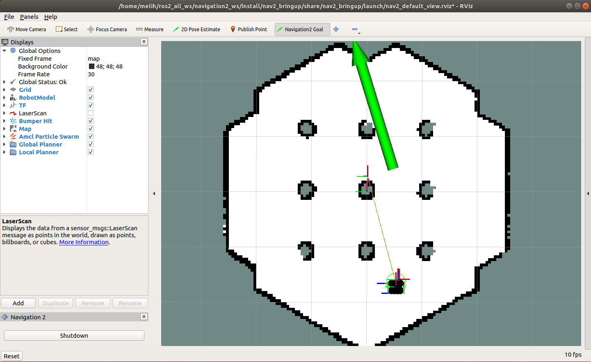

Navigation2 with Turtlebot 3 in Gazebo¶
Overview¶
This tutorial shows how to control and navigate Turtlebot 3 using the ROS2 Navigation2 in Gazebo. Turtlebot is a low-cost, educational robot kit with open-source software (ROS2). Turtblebot robots are widely supported by the ROS community. You can find many applications and examples of Turtlebot projects on the Internet. You can find more information about Turtlebot3 here.
Links to the robot kits and Github repo.
This tutorial consists of two parts. In the first part, you will learn how to use Turtlebot 3 robots in simulation (Gazebo). And in the second part, you will learn how to control a real Turtlebot Waffle using Navigation2.
ROS2 Dashing and Navigation2 Dashing 0.2.4 are used to create this tutorial.
This tutorial may take about 30 minutes to complete. It depends on your experience with ROS, robots, and what computer system you have.
Requirements¶
[Install ROS2](https://index.ros.org/doc/ros2/Installation/)
Install Navigation2
sudo apt install ros-<ros2-distro>-navigation2 ros-<ros2-distro>-nav2-bringup
Install Turtlebot 3
sudo apt install ros-<ros2-distro>-turtlebot3*
Tutorial Steps¶
0- Setup Your Environment Variables¶
Run the following commands whenever you open a new terminal during this tutorial.
source /opt/ros/<ros2-distro>/setup.bashexport TURTLEBOT3_MODEL=waffleexport GAZEBO_MODEL_PATH=$GAZEBO_MODEL_PATH:/opt/ros/dashing/share/turtlebot3_gazebo/models
Short-cut¶
If you don’t have the time to go through all the steps and only want to try Navigation2 in simulation, there is a solution for that. After setting up your system variables, if you don’t want to go through the step by step launch instructions, you can use the launch file that does all the steps that are explained in the next sections for you.
ros2 launch nav2_bringup nav2_tb3_simulation_launch.py
This launch file is going to launch Gazebo, Turtlebot3 specific nodes, Navigation2 and RViz2. Once you see everything launced, you can jump to step 5.
1- Launch Gazebo¶
Now, launch Gazebo with the world model, open a new terminal and type
gazebo --verbose -s libgazebo_ros_init.so /opt/ros/dashing/share/turtlebot3_gazebo/worlds/turtlebot3_worlds/waffle.model
Once, Gazebo is launched, you should see the Turtlebot3 world and Turtlebot 3 Waffle.
If Gazebo fails to start, run the following commands and try to launch Gazebo again.
killall gzserverkillall gzclient

2- Launch Turtlebot 3 Robot State Publisher¶
Launch Turtlebot 3 specific nodes,
ros2 launch turtlebot3_bringup turtlebot3_state_publisher.launch.py use_sim_time:=True
Note : Make sure use_sim_time is set to True because our robot Turtlebot 3 is in Gazebo.
4- Launch RViz¶
Launch RVIZ with a pre-defined configuration file.
ros2 run rviz2 rviz2 -d $(ros2 pkg prefix nav2_bringup)/share/nav2_bringup/launch/nav2_default_view.rviz
Now, you should see a shadow of Turtlebot 3 robot model in the center of the plot in RViz. Click on the Start button (Bottom Left) if you set the auto_start parameter to false.

Now, the map should appear in RViz.

5- Initialize the location of Turtlebot 3¶
First, find where the robot is in Gazebo. You can see where the robot’s initial position in Gazebo.
Set the pose of the robot in RViz. Click on the 2D Pose Estimate button and point the location of the robot on the map. The direction of the green arrow is the orientation of Turtlebot.

Now, the 3D model of Turtlebot should move to that location. A small error in the estimated location is tolerable.
6- Send a Goal Pose¶
Pick a target location for Turtlebot on the map. You can send Turtlebot 3 a goal position and a goal orientation by using the Navigation2 Goal or the GoalTool buttons.
Note: Navigation2 Goal button uses a ROS2 Action to send the goal and the GoalTool publishes the goal to a topic.
{kind=link}
Once you define the target pose, Navigation2 will find a global path and start navigating the robot on the map.

You can also observe that Turtlebot 3 moves in the simulated environment in Gazebo as well.

{kind=link}